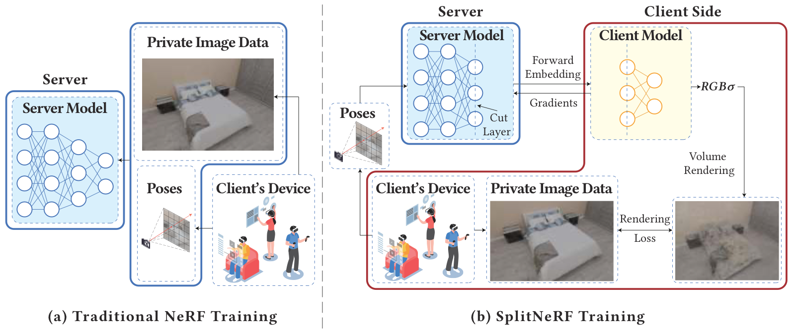

Abstract
Neural Radiance Fields (NeRF) have revolutionized 3D computer vision and graphics, facilitating novel view synthesis and influencing sectors like extended reality and e-commerce. However, NeRF's dependence on extensive data collection, including sensitive scene image data, introduces significant privacy risks when users upload this data for model training. To address this concern, we first propose a strawman solution: SplitNeRF, a training framework that incorporates split learning techniques to enable privacy-preserving collaborative model training between clients and servers without sharing local data. Despite its benefits, we identify vulnerabilities in SplitNeRF by developing two attack methods, Surrogate Model Attack and Scene-aided Surrogate Model Attack, which exploit shared gradient data and a few leaked scene images to reconstruct private scene information. To counter these threats, we introduce S2NeRF, a secure SplitNeRF that integrates effective defense mechanisms. By introducing decaying noise related to gradient norms into shared gradient information, S2NeRF preserves privacy while maintaining high utility of the NeRF model. Our extensive evaluations across multiple datasets demonstrate the effectiveness of S2NeRF against privacy breaches, confirming its viability for secure NeRF training in sensitive applications.
Resources
Citation
@inproceedings{ZZZYHW24,
author = {Bokang Zhang and Yanglin Zhang and Zhikun Zhang and Jinglan Yang and Lingying Huang and Junfeng Wu},
title = {{S2NeRF: Privacy-preserving Training Framework for NeRF}},
booktitle = {{CCS}},
publisher = {ACM},
year = {2024},
}